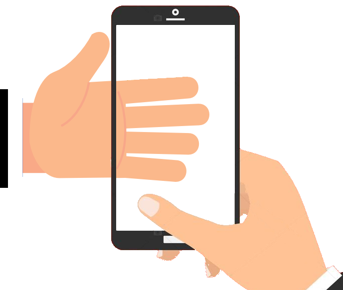

<ion-header>
    <ion-toolbar>
        <ion-buttons slot="start">
            <ion-menu-button></ion-menu-button>
          </ion-buttons>
        <div slot="end">
            
          </div>  
        <!-- <ion-title>Biometria</ion-title> -->
      </ion-toolbar>
</ion-header>

<ion-content padding>
    <div>
        <br>
          <ion-row justify-content-center align-items-center>
              <ion-col justify-content-center align-items-center>
                <div class="" text-center>Captura de biometría dactilar</div>
              </ion-col>
            <ion-item-divider></ion-item-divider>
          </ion-row>
      </div>    
   <br>
   <br>
  <b>*Fotos de huellas dactilares</b>
  <ion-row>
    <ion-col size="4" align-self-center>
        <div *ngIf="idFinger">
            <ion-icon class="size_icon"  name="checkmark"></ion-icon>
          </div>
          <div *ngIf="idFinger2">
            <ion-icon class="size_icon" name="close"></ion-icon>
          </div>
      <div>
          <ion-card-content class="imagenes">
              
          </ion-card-content>
      </div>
    </ion-col>
    <ion-col size="8" align-self-center>
        <span>Captura tus huellas dactilares</span>
        <ion-button class="ion-margin-top" expand="block" fill="outline" (click)="startFingersEnrollment()" [disabled]="isValidoHuellas">
          <ion-spinner *ngIf="isValidoHuellasSpinner" name="bubbles"></ion-spinner>  
          <ion-ripple-effect></ion-ripple-effect>  
          Huellas
          </ion-button>
    </ion-col>
  </ion-row>
  </ion-content>
  <ion-footer>
      <ion-toolbar>
          <!-- [disabled]="!idFinger || !idFinger2"  -->
          <ion-button color="primary" class="color_button" expand="block" (click)="onConsultaSimilitud()">
              <ion-ripple-effect></ion-ripple-effect>
              CONTINUAR
            </ion-button>
      </ion-toolbar>
    </ion-footer> 
